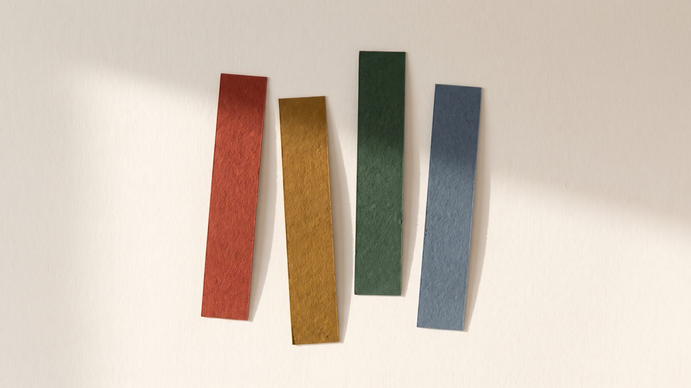

MBTI는 나를 설명한다.
DISC 검사는 내가 일하는 방식을
설명한다.

같은 상황에서 사람마다 먼저 움직이는 방향이 다릅니다. 이 진단은 성격의 좋고 나쁨을 가르지 않고, 일할 때 실제로 드러나는 행동 방향 네 가지의 비중을 재어 41개 유형 중 하나로 정리합니다.
3분
14문항. 회원가입도 결제도 없습니다.
41유형
단일 4 · 2조합 12 · 3조합 24 · 균형 1
전부 공개
결과를 보려고 돈을 내는 구간이 없습니다.
문항마다 가장 나 같은 말 1개와 가장 나답지 않은 말 1개를 고릅니다. 정답은 없습니다. 오래 고민할수록 정확도가 떨어지니 첫 느낌으로 고르세요.
회원가입이 없고, 답변은 이 브라우저 안에서만 계산되며 서버로 전송되지 않습니다.
먼저 알고 시작하세요
이건 무슨 검사인가요?
1928년 심리학자 윌리엄 몰턴 마스턴이 『Emotions of Normal People』에서 제시한 DISC 4요인 모델의 구조를 따릅니다. 주도(D)·사교(I)·안정(S)·신중(C) 네 방향의 비중을 재는 방식입니다. 이 모델 자체는 특정 회사의 소유가 아니라 공개된 이론이고, 여러 회사가 각자의 문항으로 검사 도구를 만들어 팝니다. 이 사이트의 문항·채점 기준·유형 해설은 그 모델 구조만 참고해 전부 새로 만든 것이며, 어떤 상용 검사 도구의 문항이나 리포트도 사용하지 않았습니다.
MBTI랑 뭐가 다른가요?
각 검사의 소유사가 스스로 이렇게 설명합니다. MBTI는 선호(preference) — 에너지를 어디서 얻는지, 정보를 어떻게 받아들이는지 — 네 쌍을 다룹니다. DISC는 행동 경향(behavioral tendencies)을 다룹니다. 쉽게 말해 MBTI는 '내 안에서 무엇이 편한가'를, DISC는 '남들 눈에 내가 어떻게 움직이는가'를 봅니다. 그래서 DISC는 팀 배치·협업 대화에 쓰이는 경우가 많습니다.
참고로 무료로 도는 MBTI 검사는 정식 MBTI가 아닙니다. MBTI 소유사는 "정식 MBTI는 저작권으로 보호되며 인증받은 사람만 시행할 수 있다"고 공식적으로 밝히고 있고, 국내 정식 검사는 144문항에 3만 원 수준입니다.
참고로 무료로 도는 MBTI 검사는 정식 MBTI가 아닙니다. MBTI 소유사는 "정식 MBTI는 저작권으로 보호되며 인증받은 사람만 시행할 수 있다"고 공식적으로 밝히고 있고, 국내 정식 검사는 144문항에 3만 원 수준입니다.
얼마나 믿어도 되나요?
솔직하게 적겠습니다. DISC는 학계에서 타당도 논란이 있는 도구입니다. 1주 재검사 신뢰도가 높게 보고된 연구가 있는 반면, 네 요인이 서로 독립적이지 않고 Big Five 특성의 조합으로 더 잘 설명된다는 지적, 예측 타당도가 입증되지 않았다는 지적도 함께 있습니다. 이건 MBTI도 같은 처지입니다.
그리고 이 사이트는 자체 문항이라 표준화된 규준 표본이 아직 없습니다. 지금의 강도 구간(1~7)은 이론적으로 설정한 잠정값이고, 응답이 충분히 쌓이면 실제 분포 기준으로 교체할 예정입니다.
그래서 이렇게 쓰시면 됩니다 — 나를 확정하는 도구가 아니라, 팀 안에서 서로 다른 방식을 이야기하기 시작하는 도구. 채용·인사 평가처럼 누군가에게 불이익이 갈 수 있는 결정의 근거로는 쓰지 마세요.
그리고 이 사이트는 자체 문항이라 표준화된 규준 표본이 아직 없습니다. 지금의 강도 구간(1~7)은 이론적으로 설정한 잠정값이고, 응답이 충분히 쌓이면 실제 분포 기준으로 교체할 예정입니다.
그래서 이렇게 쓰시면 됩니다 — 나를 확정하는 도구가 아니라, 팀 안에서 서로 다른 방식을 이야기하기 시작하는 도구. 채용·인사 평가처럼 누군가에게 불이익이 갈 수 있는 결정의 근거로는 쓰지 마세요.
내 답변은 어디로 가나요?
아무 데도 가지 않습니다. 문항 선택과 채점은 전부 이 페이지의 자바스크립트가 브라우저 안에서 처리하고, 결과를 서버로 보내는 코드가 없습니다. 이름·이메일·나이 같은 것도 묻지 않습니다. 페이지를 닫으면 결과도 같이 사라집니다.
1 / 14
0%
아래 넷 중에서
가장 나 같은 것에 나 같다, 가장 거리가 먼 것에 아니다를 누르세요. 둘 다 고르면 자동으로 넘어갑니다.
행동유형 진단 리포트
강도 프로파일
요인별 수치
| 요인 | 최고치 | 최소치 | 차이 | 강도 |
|---|
강도는 1~7이며 4가 중립대입니다. 5 이상이 뚜렷하게 쓰는 방향, 3 이하는 평소 잘 꺼내지 않는 방향입니다.
이럴 때 강하다
이럴 때 걸린다
압박 · 성장 · 자리
- 압박받을 때
- 성장 포인트
- 잘 맞는 자리
- 궁합 유형
네 가지 방향이란
근거와 한계
출처
· W. M. Marston, Emotions of Normal People (1928) — archive.org
· DISC 모델 개요·이용 규모 — discprofile.com
· 정식 MBTI의 저작권·인증 정책 — themyersbriggs.com
· DISC 신뢰도·타당도 논쟁 정리 — Wikipedia: DISC assessment
· MBTI 심리측정 비판 — Pittenger, D. J. (1993), Review of Educational Research 63(4)